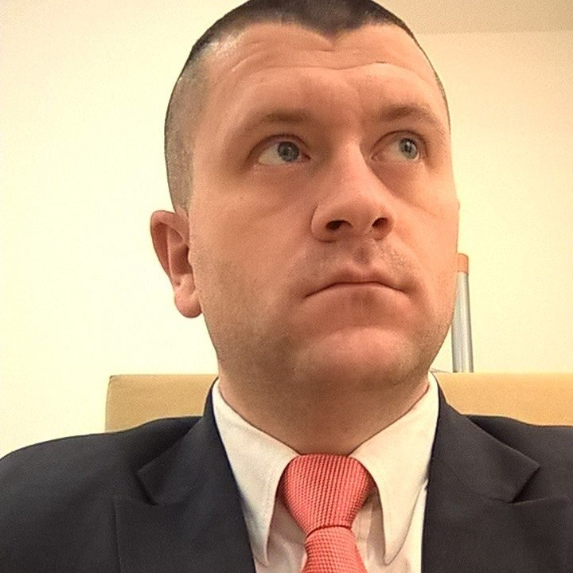

| Ime i prezime: | Goran Vukmir |
| Datum rođenja: | 7. avgust 1985. |
| Adresa stanovanja: | Save Kovačevića 2 |
| Mjesto boravka: | Banja Luka, 78000 |
| Broj telefona: | 063 363 559 |
| Email: | goranvukmir@yahoo.com |
| Državljanstvo: | BiH/ Republika Srpska |
| 2012-2016 | Visoka škola "CEPS-Centar za poslovne studije" |
| 2000-2004 | Elektro škola „Nikola Tesla“, Banja Luka, Zvanje- tehničar elektrotehnike, |
| 1992-2000 | Osnovna škola „Vuk Stefanović Karadžić“, Banja Luka |
| 2017. | Kurs WordPress + HTML&CSS,– „JSU | Web Design School“, Banja Luka |
| 2016-2017 | Kurs PHP&MySQL,– „ICBL“, Banja Luka |
| 2016. | Kurs HTML&CSS,– „ICBL“, Banja Luka |
| 2004-2005 | CISCO Academy(CCNA1,CCNA2,CCNA3 i CCNA4) – Elektrotehnički Fakultet ,Banja Luka |
| 1999. | Kurs informatičke pismenosti,– „EURO DATA“, Banja Luka |
| 2006 | - ... | Naziv i sjedište preduzeća: - "JP Hrvatske Telekomunikacije dd Mostar“, Banja Luka (ERONET) Vrsta djelatnosti: Telekom Operater Pozicija: Tehničar, Regionalni voditelj, Voditelj prodajnog mjesta Opis radnog mjesta: Organizacija komercijalnih i kadrovskih poslova, održavanje komunikacije sa klijentima , priprema i potpisivanje ugovora, održavanje IT infrastrukture same poslovnice,konfigurisanje telekomunikacionih uređaja za korištenje GPRS/EDGE tehnologije, konfigurisanje personalnih računara za korištenje „Mobilnog interneta “ ,upravljanje bazama podataka, … |
| 2006 | . | Naziv i sjedište preduzeća: - „ALF-OM doo“, Banja Luka Vrsta djelatnosti: Prodaja i servis računara, kopiraparata, štampača i multifuncijskih uređaja Pozicija: Prodavač |
| 2005 | -2006 | Naziv i sjedište preduzeća: „BLICNET doo“, Banja Luka Vrsta djelatnosti: Internet Service Provider Pozicija: Tehničar u Wireless sektoru Opis radnog mjesta:Montaža uređaja tj. Acess Pointa,konfigurisanje PC-a korisnika bežičnog interneta, održavanje i intervencije kod samoh korisnika usljed prestanka rada interneta, … |
Posted by: Goran Vukmir
Kontakt informacije: goranvukmir@yahoo.com.